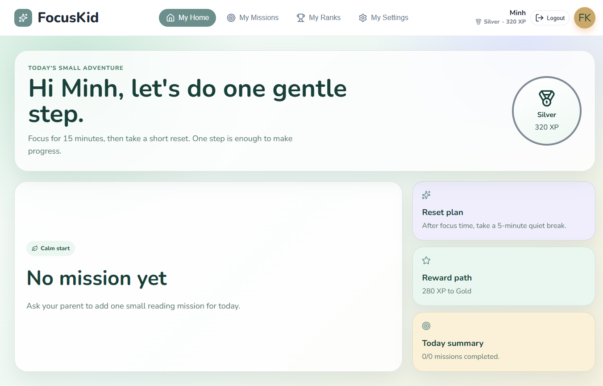
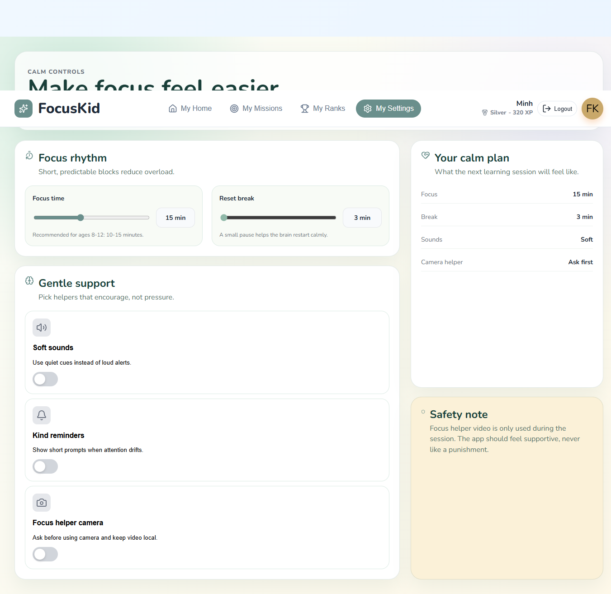

Child Dashboard mới
Dashboard được thiết kế lại để trẻ thấy ngay việc cần làm tiếp theo. Thay vì nhiều card thống kê, màn chính hiển thị một nhiệm vụ chính, tiến độ nhẹ nhàng, CTA lớn và các gợi ý reset.
FocusKid HCI redesign
Báo cáo này tổng hợp các thay đổi đã thực hiện, ảnh minh hoạ chụp từ dev server, và lý do các thay đổi phù hợp hơn với nguyên tắc HCI cho trẻ ADHD: ít nhiễu, nhẹ nhàng, có kiểm soát, và tập trung vào một bước nhỏ tại một thời điểm.


Dashboard được thiết kế lại để trẻ thấy ngay việc cần làm tiếp theo. Thay vì nhiều card thống kê, màn chính hiển thị một nhiệm vụ chính, tiến độ nhẹ nhàng, CTA lớn và các gợi ý reset.
Thêm hệ preferences lưu bằng localStorage: focus time, break time, soft sounds, kind reminders và focus helper camera. Giá trị được clamp để phù hợp trẻ 8-12 tuổi.
Camera không còn tự bật. Trẻ đọc giải thích trước, chủ động bấm Start helper, có nút Stop, và có thể tắt hoàn toàn trong Settings.
Popup cảnh báo đỏ được thay bằng dialog “Take a calm breath”. Timer tạm dừng, âm cue nhỏ hơn, ngôn ngữ khuyến khích thay vì trách phạt.
Bảng màu chuyển sang mint, cream, lavender, sky và xanh lá đậm. Màu đỏ/cảnh báo được hạn chế để tránh tạo cảm giác bị phạt hoặc quá kích thích.
Thêm semantic cho switch settings, progressbar dashboard, dialog mất tập trung có label/focus, giúp giao diện dễ dùng hơn với keyboard và assistive technologies.
src/pages/ChildDashboard.tsx và src/assets/dashboard.css: Calm Adventure dashboard.src/components/SettingsView.tsx và src/assets/settings.css: settings mới cho focus rhythm/gentle support.src/components/FocusCameraPanel.tsx: camera opt-in, trạng thái helper off, retry/stop rõ ràng.src/pages/ChildReader.tsx và src/assets/reader.css: popup pause nhẹ, âm cue nhỏ, dialog accessible.src/utils/preferences.ts và src/utils/preferences.test.ts: persistence + kiểm thử preferences.implementation-notes.html: ghi chú triển khai chi tiết theo yêu cầu.vitest preferences: 4 tests passed.npm run build: pass. Có warning bundle lớn do MediaPipe.Sau cải tiến, phần UI dành cho trẻ đã gần hơn với một sản phẩm HCI cho trẻ ADHD: màn hình dịu hơn, ít lựa chọn gây phân tán hơn, nhiệm vụ được chia thành một bước rõ ràng, camera tôn trọng quyền kiểm soát, và feedback khi mất tập trung chuyển sang hướng hỗ trợ cảm xúc. Đây vẫn là prototype frontend, nhưng nền UI/UX hiện phù hợp hơn nhiều để trình bày trong project Tương tác người máy.